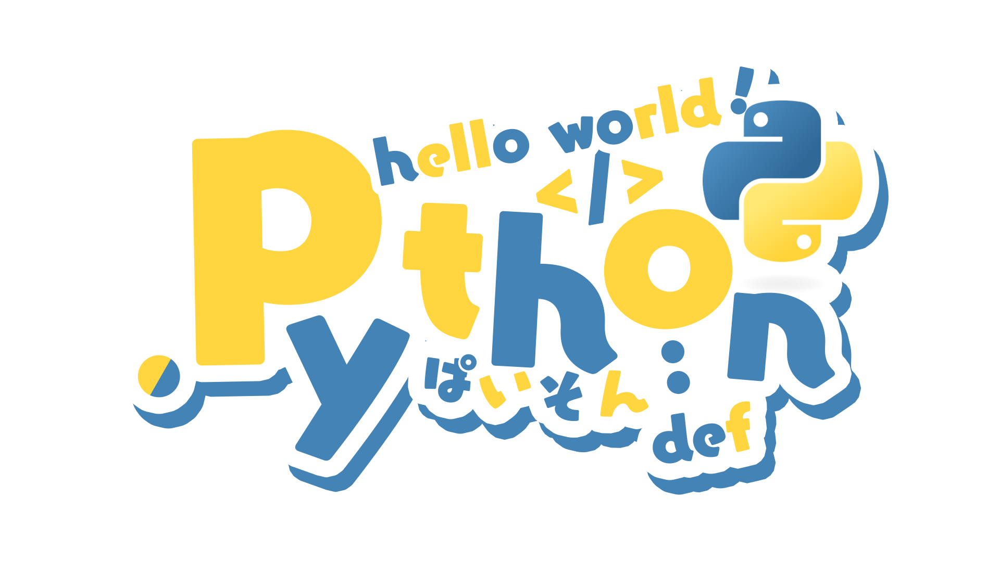

從 C 語言快速上手
Python
的基礎實戰

https://github.com/SAWARATSUKI/ServiceLogos
## Python 簡介 - Guido van Rossum（吉多·范羅蘇姆）發明，於1991年釋出 - 直譯式程式語言 
## Python 被廣泛應用於 - 網頁應用程式（Flask、Django） - 大數據分析（NumPy、Pandas、Matplotlib） - 人工智慧（PyTorch、TensorFlow） - 系統腳本